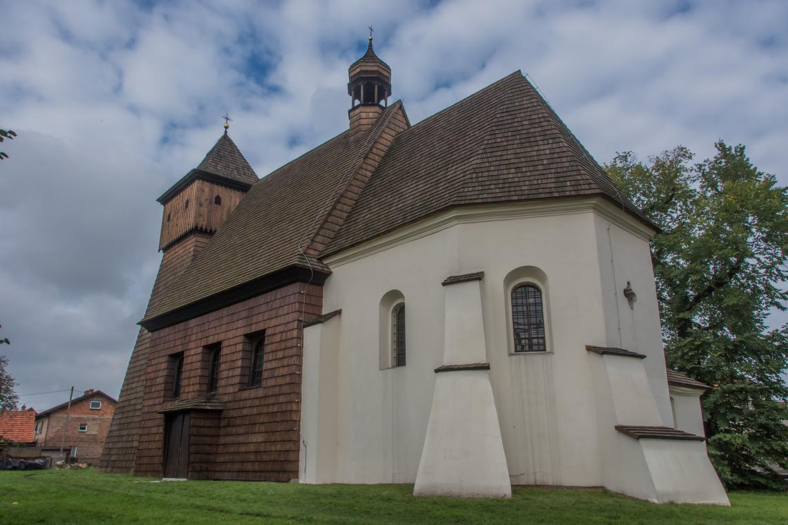

Kościół św.Jerzego
Jeden z wielu interesujących, drewnianych kościołów znajdujący się w gliwickiej dzielnicy Ostropa. Kościół pw. św. Jerzego, leżący kilka km na zachód od centrum miasta, znajduje się na Szlaku Architektury Drewnianej województwa śląskiego. Trudno jest dokładnie określić datę powstania pierwszej budowli na miejscu obecnej świątyni. Obiekt ten wzmiankowany był już w 1340 r. Dzisiejszy kościół św. Jerzego pochodzi z prawdopodobnie z wieku XVI. Dostrzegając potrzebę gruntownego remontu świątyni na początku XXI w. przeprowadzono szereg akcji zbierania funduszy na jej ratowanie. 17 kwietnia 2005 r. we wnętrzu zorganizowano specjalny spektakl co stało się początkiem działań. Od 2006 r. z inicjatywy proboszcza Józefa Kary rozpoczęto zainicjowano pozyskiwanie środków z funduszy europejskich, zaś po dwóch latach rozpoczęto prace remontowe. Do 2009 r. wymieniono gontowe pokrycie dachu, wieży i drewnianych ścian nawy oraz przeprowadzono renowację prezbiterium. W ostatnim czasie przystąpiono do odnawiania cennych malowideł ściennych. Kościół pw. św. Jerzego po ukończeniu prac ma z powrotem pełnić funkcje sakralne oraz być udostępniony zwiedzającym.
